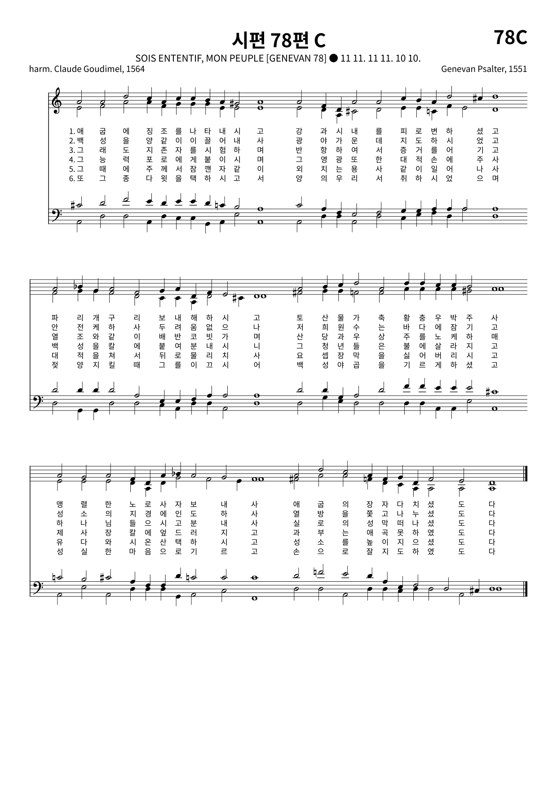

Psalm 78C
SOIS ENTENTIF, MON PEUPLE [GENEVAN 78] · 11 11. 11 11. 10 10.
English title: Give Ear, My People, Listen to My Teaching
Tune: Genevan Psalter, 1551 · Harmony: Claude Goudimel, 1564 · Lyrics: Korean adaptation of Psalm 78 from the Korean Revised Version (AI draft adaptation · not yet theologically reviewed) · 6 stanzas
Psalm 78 is divided into 3 tunes: A B C · This tune contains stanzas 12–17 of the Psalm 78 lyrics.
Score PDF MusicXML (for printing) MusicXML (for accompaniment, with prelude and repeats) Read Psalm 78 (Korean Revised Version)
Score
← Psalm 78B ListAccompaniment (in preparation)Psalm 79 →
Lyrics (Korean)
Stanza 1
애굽에 징조를 나타내시고
강과 시내를 피로 변하셨고
파리 개구리 보내 해하시고
토산물 가축 황충 우박 주사
맹렬한 노로 사자 보내사
애굽의 장자 다 치셨도다
애굽에 징조를 나타내시고
강과 시내를 피로 변하셨고
파리 개구리 보내 해하시고
토산물 가축 황충 우박 주사
맹렬한 노로 사자 보내사
애굽의 장자 다 치셨도다
Stanza 2
백성을 양 같이 이끌어 내사
광야 가운데 지도하시었고
안전케 하사 두려움 없으나
저희 원수는 바다에 잠기고
성소의 지경에 인도하사
열방을 쫓고 나누셨도다
백성을 양 같이 이끌어 내사
광야 가운데 지도하시었고
안전케 하사 두려움 없으나
저희 원수는 바다에 잠기고
성소의 지경에 인도하사
열방을 쫓고 나누셨도다
Stanza 3
그래도 지존자를 시험하며
반항하여서 증거를 어기고
열조와 같이 배반코 빗가며
산당과 우상 주를 노케 하매
하나님 들으시고 분내사
실로의 성막 떠나셨도다
그래도 지존자를 시험하며
반항하여서 증거를 어기고
열조와 같이 배반코 빗가며
산당과 우상 주를 노케 하매
하나님 들으시고 분내사
실로의 성막 떠나셨도다
Stanza 4
그 능력 포로에게 붙이시며
그 영광 또한 대적 손에 주사
백성을 칼에 붙여 분내시니
그 청년들은 불에 살라지고
제사장 칼에 엎드러지고
과부는 애곡 못하였도다
그 능력 포로에게 붙이시며
그 영광 또한 대적 손에 주사
백성을 칼에 붙여 분내시니
그 청년들은 불에 살라지고
제사장 칼에 엎드러지고
과부는 애곡 못하였도다
Stanza 5
그때에 주께서 잠 깬 자 같이
외치는 용사 같이 일어나사
대적을 쳐서 뒤로 물리치사
요셉 장막을 싫어 버리시고
유다와 시온 산 택하시고
성소를 높이 지으셨도다
그때에 주께서 잠 깬 자 같이
외치는 용사 같이 일어나사
대적을 쳐서 뒤로 물리치사
요셉 장막을 싫어 버리시고
유다와 시온 산 택하시고
성소를 높이 지으셨도다
Stanza 6
또 그 종 다윗을 택하시고서
양의 우리서 취하시었으며
젖 양 지킬 때 그를 이끄시어
백성 야곱을 기르게 하셨고
성실한 마음으로 기르고
손으로 잘 지도하였도다
또 그 종 다윗을 택하시고서
양의 우리서 취하시었으며
젖 양 지킬 때 그를 이끄시어
백성 야곱을 기르게 하셨고
성실한 마음으로 기르고
손으로 잘 지도하였도다